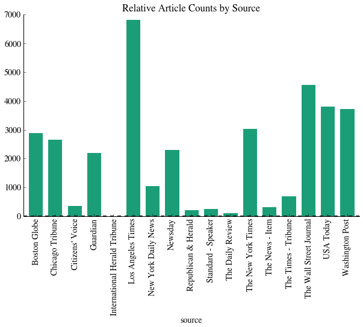

Project Summary
Background
Various interesting things about news and elections go here...
Methods
Various interesting things about our methods go here...
Results
Various results...
Conculusions
Things we discovered are the most important things ever discovered...
Data Collection
Web Scraping and API Parsing
Our project attempts to analyze the effect of national media (particularly daily newspapers) on the 2012 Presidential Election. To begin, we first developed web scrapers / API parsers for ten of the top fifteen daily newspapers by daily circulation that filtered articles on date and relevance to the 2012 election. While most newspapers do not allow for unrestricted access to full articles, all of our data sources return article headlines, authors, word count, section, and a short abstract or summary of the article. We will use this data to perform natural language processing (NLP) of the article dataset and evaluate the impact of electoral news coverage.
Primary Data Sources:
- New York Times API
- The Guardian API
- USA Today API + archive scraping
- The Wall Street Journal archive scraping
- New York Daily News scraping
- The Boston Globe archive scraping
- The Los Angeles Times archive scraping
- The Washington Post archive scraping
- The Chicago Tribune archive scraping
- Newsday archive scraping
- Archive Scraping of several Pennsylvania Newspapers (Philadelphia Herald, Daily News, etc.)
We also wrote an interface to Bing News but after running out of free queries Microsoft was unable to grant us additional free queries.
Data Munging
After combining all the datasets of our scraped data, we filtered it to ensure that all articles are related to Romney and Obama based on string matching. We then split the corpus of articles into two groups: one directly related to Romney and the other directly related to Obama. To determine whether articles were directly related to the candidate, we wrote a function that iterated through each article, selecting ones in which that candidate was uniquely mentioned in the headline. If neither candidate was mentioned in the headline, the function searched for a candidate uniquely mentioned in the abstract.
Following filtering and joining the dataset, we had a total of 35,274 articles. The relative article counts among different newspapers are as follows:
Sentiment analysis
The data that we have collected so far does not have an intrinsic categorization built-in like the Rotten Tomatoes data from HW3. Instead, we will use three different precategorized datasets to evaluate each article on positivity, subjectivity, and support.
The positivity dataset is a set of 50,000 IMDB movie reviews from Stanford (url) that are presplit into testing and training data. While our dataset is composed of news articles, not movies, we will be using ngrams of at most length 3 and the general trend of whether a phrase connotes a positive feeling about a topic or not should be approximately the same.
The subjectivity dataset is composed of a set of 7419 IMDB movie summaries and Rotten Tomatoes reviews -- an IMDB summary is considered objective while Rotten Tomatoes data is considered subjective.
The support/oppose dataset comes from 10,000 political speeches that were precharacterized into support/oppose.
... distributions etc. ...
Vectorization
Having loaded in the training data, we now vectorize the data and convert it into a form that we can use for classification. There are two different vectorizers that we can use: CountVectorizer, which simply converts the string 'Romney is running for election' into a bag of words with a count of each word in the string. Tf-idf term weighting, however, re-weights the counts based on the frequency of words: e.g. words like 'the' or 'is' will receive a much lower weighting in the final analysis because these terms occur too frequently to be informative.
We will use sparse vectors throughout this analysis to save on memory space.
Naive Bayes Training
We now use the vectorized data to fit a multinomial Naive Bayes classfier. First, however, we split the three datasets into testing and training data. We then fit the classifier and report the classification scores to determine the degree of overfitting.
In our preliminary analysis, we will use a CountVectorizer with unigrams. We will then look at more advanced options later.
... comparison of different models, etc.
Cross Validation
To improve the fit of this classifier, we can use cross-validation to determine the best constants for fitting.
First, we will attempt to cross-validate by maximizing the testing set score. We will then attempt to maximize the log-liklihood and we will compare the results.
In cross validation, for each dataset we will compare Tdif vs. Counts, unigrams vs. bigrams, alpha values (0-50), and min_df values (1e-5 through 1e-1).
... etc. etc. etc. ...